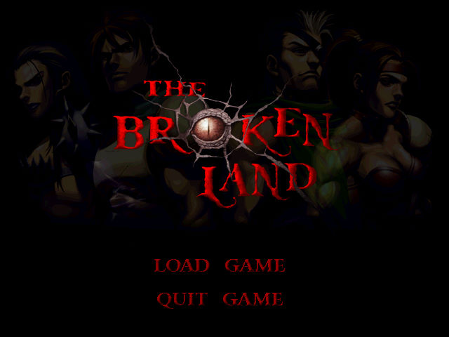
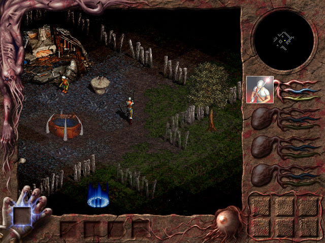

名稱：失落大地／破碎的大地 (The Broken Land，中文版) 簡介：白金家族1999年出品的角色扮演遊戲，以3D斜角畫面呈現，採團隊即時方式戰鬥 [待補]。   保護：繁中版為光碟SecuROM（早期），簡中版／英文版已去除SecuROM保護 備註：繁中版由於遊戲有早期SecuROM保護，已不相容於現今系統，只能使用其他非繁中版的 主程式或免光碟檔，否則無法通過光碟檢驗。 檔案：nocd.rar = 免光碟檔

